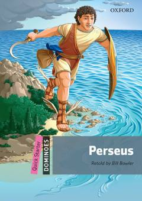

PQadimgi yunon qahramoni Perseusning sarguzashtlari haqidagi soddalashtirilgan inglizcha hikoya.
Ushbu kitob qadimgi yunon qahramoni Perseusning sarguzashtlari haqidagi mashhur afsonaning soddalashtirilgan moslashuvidir. Oxford Dominoes seriyasining bir qismi sifatida u ingliz tilini o'rganayotganlar uchun maxsus 250 ta asosiy so'z yordamida qayta hikoya qilingan.